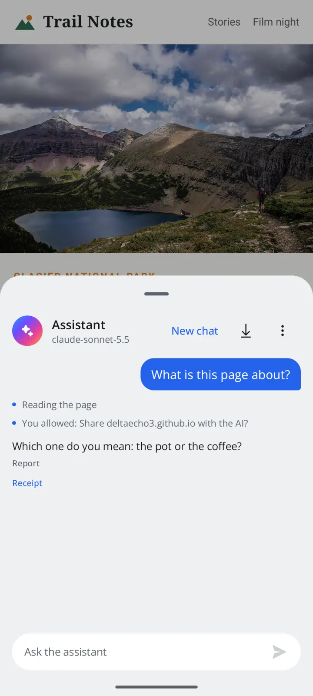
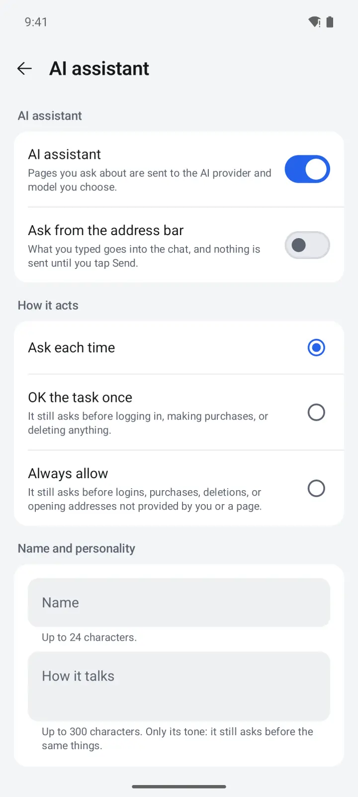
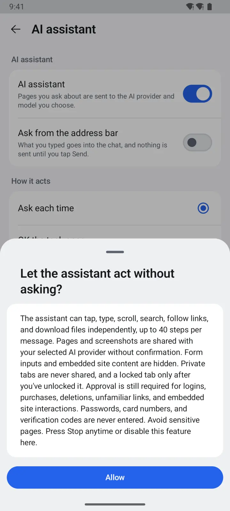
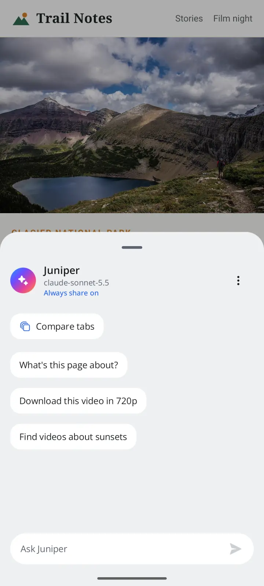
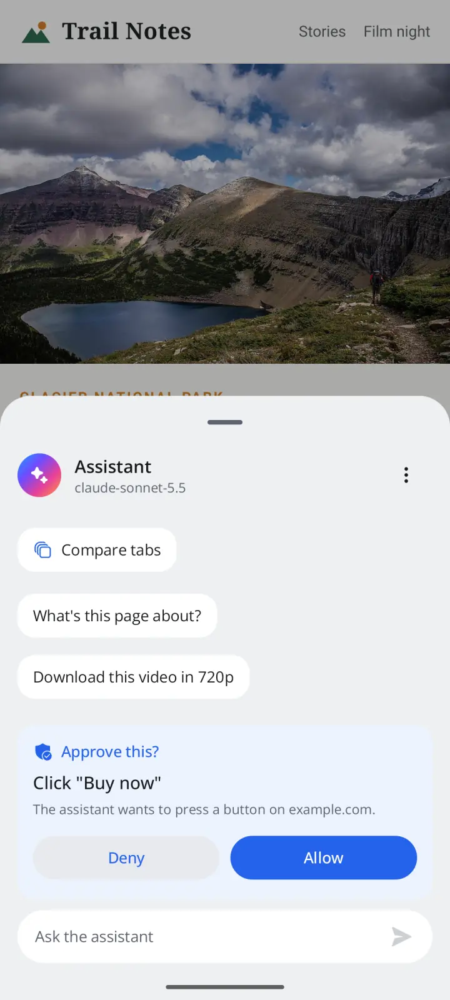

Let it do things, with your OK
How-to
You can ask the assistant to do more than answer: it can browse for you. Ask "find the trail map on this page and open it" or "download this video in 720p", and it reads, taps, types and searches, in regular tabs, with your OK.
What it can do
Each thing it does shows as a small step line in the chat:
- read the page (Reading the page), find words on it, scroll, and wait for the page or some text to show up,
- look at the screen when the text isn't enough (Taking Screenshot), with fields, typed text and other sites' frames blacked out,
- open an address, go back (Going back), and search the web with DuckDuckGo ("Searching:" and the words),
- tap a link or button ("Clicking" and its name) and fill in a field (Filling in a field),
- start a video (Starting video), list the videos on a page (Checking for videos) and their real qualities and sizes (Checking available qualities),
- read a video's captions (Reading the video's captions), or, for one without captions, turn its speech into text on your phone (Getting the video's sound, then how far the transcribing is),
- save a video (Getting the download ready, then "Download started:" and the quality), check on a download (Checking the download) and list your downloads (Checking downloads),
- propose a plan for a bigger task (Proposing a plan).
It can't run anything on your phone, and it can't change Wayward's settings, Shields, locks or your files. It never types passwords, card numbers or one-time codes.

How much it asks
Settings > AI assistant > How it acts:
- Ask each time (where it starts): it asks before each step that does something on a page.
- OK the task once: it asks once before starting, shows its plan when it has one, then works through the task by itself, typing included.
- Always allow: it reads, taps and types by itself, without the sharing card. Wayward asks first (Let the assistant act without asking?), since pages then go to your provider without confirmation.


While Always allow or Always share pages is on, the panel says Always allow on or Always share on under the assistant's name, so you always know.

The cards it shows
- Approve this? comes before a step that does something: what it wants to click, type, open or search for, and where. Tap Allow (it works after half a second) or Deny. The chat notes your answer.
- Start task? comes before a task you'll OK once: its plan in numbered steps, the sites, what it shares with your provider, an estimate of the steps and tokens, and its limits. Tap Start task, or Not now. During the task the panel counts the steps, like "Step 3 of 40".
- Download this video? lists the video's qualities with the one it picked selected. You can pick another, then tap Download, or Not now. When the download ends, the chat says so ("Downloaded:" and its name; just A download finished. It's in Downloads. while Downloads is locked).
While another app draws over Wayward (a screen-dimming app, a chat bubble, a floating button), the buttons on these cards don't take a tap, and a red line on the card says Another app is drawing over Wayward. Close it and tap again. See what Wayward's messages mean.

What it always asks about
Whatever you set in How it acts, a card comes up with its own title before:
- This looks like a log-in
- This looks like a purchase
- This looks like a deletion
- This is from another site: anything inside another site's frame on the page,
- It read another site before this: typing or pressing on a different site from the one it read, so one site's contents can't be carried to another, and, with Always allow or a task you OK'd, a web search once it has read a page (with Ask each time, every search has a card anyway),
- opening an address that didn't come from you or from a page it read.
At a "verify you're not a bot" check it stops and tells you, in every mode. You can tap Stop at any time. One message also stops after 15 steps (40 for a task you OK'd, or with Always allow), and the chat says so, like "Stopped after 15 steps. Ask again to continue."
For how to stay safe with it, see what's sent, and staying safe.